Управление живыми сессиями агента с Android-телефона и раскладных устройств. Синхронизация истории без лишних токенов, pairing по коду, approvals, две панели на внутреннем экране.
| 1. Что это и что умеет | 3 |
| 2. Как это работает: архитектура | 4 |
| 3. Установка плагина в DeepSeek Harness | 5 |
| 4. Первое подключение телефона (pairing) | 6 |
| 5. Экран сессий | 7 |
| 6. Чат, стриминг и отправка промптов | 8 |
| 7. Approvals и вопросы агента | 9 |
| 8. Синхронизация и экономия токенов | 10 |
| 9. Раскладные устройства | 11 |
| 10. Настройки и диагностика | 12 |
| 11. Безопасность | 13 |
| 12. Частые проблемы (FAQ) | 14 |
| 13. Ограничения версии 1 и что проверено | 15 |
| Приложение. Файлы, протокол, команды | 16 |
| Приложение Б. Как проходит промпт и approvals | 17 |
| Приложение В. Журнал событий, безопасность | 18 |
| Приложение Г. Слои установки и галерея | 19 |
Документ рассчитан на пользователя, который уже работает с DeepSeek Harness на компьютере и хочет отвечать агенту, читать историю и подтверждать действия с телефона. Программировать ничего не нужно: установка — одна команда, подключение — один код.
3081 на компьютере;dsh-mobile с LAN-шлюзом и pairing-страницей,
PWA-клиент (packages/dsh-mobile/web), Android-обёртка (android/)
и CI-сборка APK (.github/workflows/android.yml). Исходный код и документация — в папке проекта.
DSH Mobile — мобильный клиент для DeepSeek Harness. Он не заменяет десктопное приложение, а становится его пультом: те же сессии, та же история, тот же агент — но в кармане. Плагин работает внутри процесса DSH, поэтому видит всё, что видит десктопный GUI, и не требует второй копии приложения.
| Возможность | Что делает |
|---|---|
| Список сессий | Заголовки, воркспейс, модель, статус running / blocked / queued, время активности, поиск. |
| Открытие сессии | Окно последних ~35 событий: реплика пользователя, ответы ассистента, карточки инструментов. |
| Живой поток | Новые события приходят через SSE; текст ассистента печатается по мере генерации. |
| Отправка промптов | Обычная отправка, в очередь и «steer» в текущий ход; остановка хода. |
| Approvals | Подтверждение опасных команд: «Разрешить» / «Запретить» — с телефона, когда десктоп не подключён. |
| Вопросы агента | Показ вопроса и вариантов ответа (ответ — на десктопе в v1). |
| Раскладные экраны | Две панели на внутреннем экране, одна — на внешнем; состояние не сбрасывается. |
| Офлайн-старт | Мгновенный показ кэша из IndexedDB, затем догрузка с компьютера. |
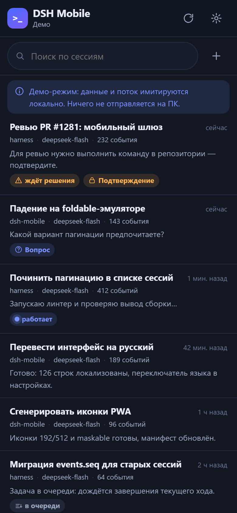
Телефон не пересылает транскрипт и не запускает модель ради синхронизации. История читается из уже существующего журнала сессии, живые события — из шины DSH. Просмотр с телефона стоит 0 токенов; промпт — ровно столько, сколько промпт с десктопа.
Внутри DeepSeek Harness работает плагин. Он поднимает отдельный LAN-слушатель на порту
3081: оттуда телефон получает сам клиент (PWA) и API. Плагин общается с сервисами
DSH напрямую, в процессе, — поэтому ему не нужны ни второй сервер, ни пересылка данных через облако.
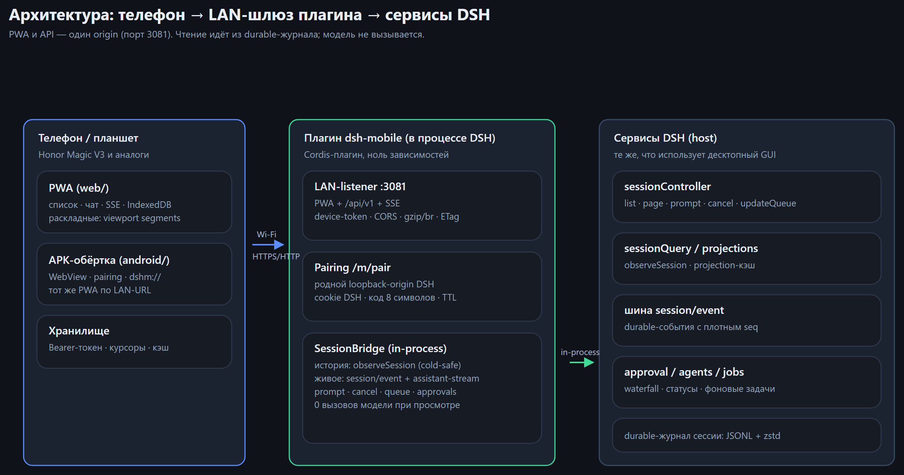
Отдельный сервер-компаньон потребовал бы заново реализовать внутренний протокол DSH и хранить копию состояния. Плагин же использует те же сервисы, что и десктопный интерфейс:
sessionController — список, история, промпты, отмена;sessionQuery — чтение журнала без активации агента;session/event — живые durable-события;approval — перехват запросов подтверждения.Порт 3081 — LAN: клиент и API, авторизация токеном устройства.
Родной порт DSH — только страница /m/pair, защищённая cookie DSH.
Разделение принципиальное: код привязки физически не отдаётся в локальную сеть, его видит только тот, кто уже сидит за компьютером.
Плагин — локальная папка packages/dsh-mobile. Установка занимает минуту и
выполняется один раз; после неё клиент доступен на телефоне.
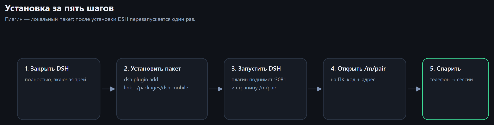
Полностью, включая значок в системном трее: профиль не должен быть занят установкой.
Откройте PowerShell и выполните (замените путь на свой):
# путь к CLI DeepSeek Harness $cli = "C:\Users\<вы>\AppData\Local\Programs\DeepSeek Harness\resources\runtime\cli\bin\dsh.cmd" & $cli plugin --profile desktop add "link:C:\Users\\Documents\deepseek-harness\harness\packages\dsh-mobile"
Команда ставит пакет как link:-зависимость профиля и добавляет его в список
бандлов. Успех — код возврата 0 и запись в %USERPROFILE%\.dsh\profiles\desktop\package.json.
Плагин стартует вместе с приложением: поднимает порт 3081 и регистрирует
страницу /m/pair. В логе %USERPROFILE%\.dsh\logs\dsh-mobile.log появятся строки
apply() start и gateway listening.
На компьютере откройте:
http://127.0.0.1:3081/api/v1/hello
Ожидаемый ответ:
{"protocol":1,"appVersion":"0.2.1-rc.2","requiresPairing":true,
"capabilities":{"approvals":true,"questions":true,"liveStream":true}}
Все параметры — в %USERPROFILE%\.dsh\profiles\desktop\cordis.patch.yml
(таблица параметров — в приложении). После изменения порта или TLS перезапустите DSH:
слушатель читает настройки при старте.
Привязка выполняется один раз. Нужны: компьютер с открытым DSH и телефон в той же сети Wi-Fi.
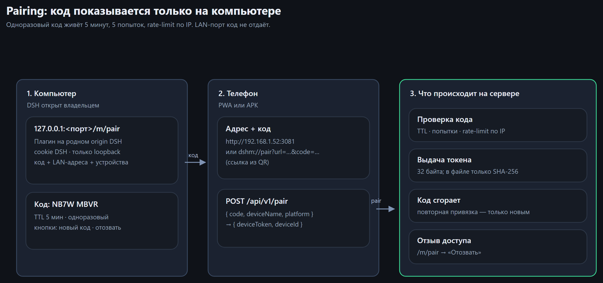
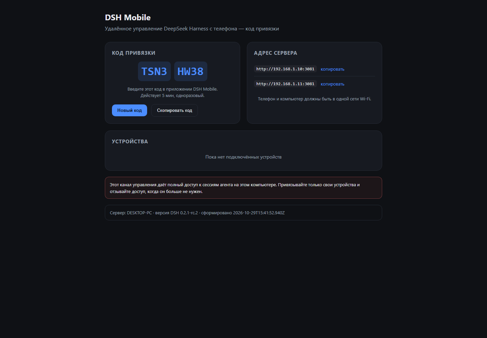
/m/pair на компьютере: код, адреса, устройстваhttp://127.0.0.1:<порт DSH>/m/pair.192.168.1.10:3081).http://192.168.1.10:3081/./m/pair.dshm://pair?url=http://192.168.1.10:3081&code=XXXXXXXX
открывает приложение сразу с заполненными полями. Её можно закодировать любым генератором QR.
Код одноразовый, действует 5 минут, после 5 ошибок сгорает. Если не успели — нажмите «Новый код» на странице.
3081 в брандмауэре Windows для частной сети;listenHost: 127.0.0.1;/m/pair — там перечислены все интерфейсы.На странице /m/pair нажмите «Отозвать» рядом с устройством. Токен перестаёт
работать немедленно; чтобы вернуть доступ, привяжите устройство заново. Экран привязки на
телефоне — на рисунке ниже.
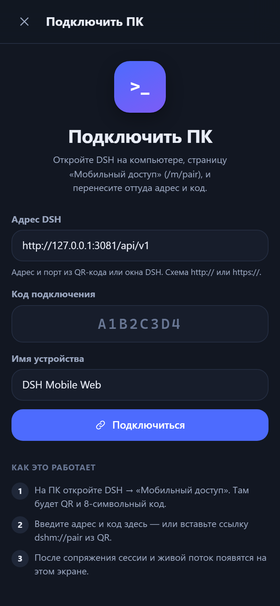
После привязки открывается список сессий — те же сессии, что в десктопном DSH, включая активные и завершённые.
| Элемент | Значение |
|---|---|
| Заголовок | имя сессии; если DSH ещё не сгенерировал — «Без названия» |
| работает | агент выполняет ход прямо сейчас |
| ждёт решения | турн приостановлен на approval |
| Вопрос | агент задал вопрос пользователю |
| подтверждение | есть запрос на разрешение действия |
| «в очереди» | сообщение ждёт следующего хода |
Список и последние события кэшируются в браузере (IndexedDB). При открытии приложения вы сразу видите вчерашнюю картину, а затем она тихо обновляется с компьютера — без экранов загрузки и без повторной загрузки всей истории.
Откройте сессию — увидите последний ход: вашу реплику, ответы ассистента и карточки вызванных инструментов. Новые сообщения появляются сами: клиент держит живой поток.
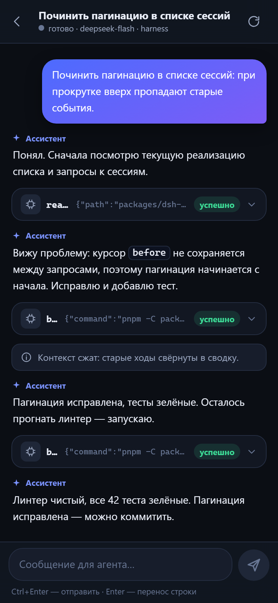
Текст ответа печатается по мере генерации. После завершения шага приходит финальное сообщение, и отображение становится консистентным — даже если связь прерывалась.
Каждый вызов инструмента — отдельная карточка: имя, аргументы (обрезаны), статус «выполняется / успешно / ошибка». Нажмите на карточку, чтобы увидеть детали.
Клавиатура: Ctrl+Enter — отправить, Enter — перенос строки.
На телефоне — кнопка отправки.
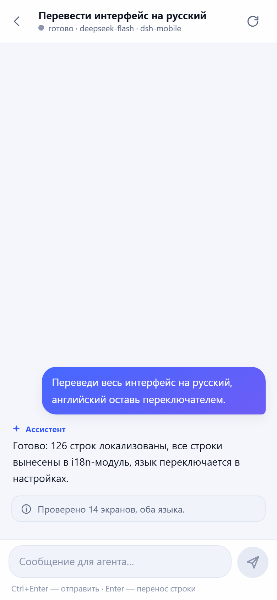
Открывается последний ход — этого достаточно, чтобы понять контекст. Если нужно глубже, нажмите «Загрузить раньше»: клиент догрузит предыдущий фрагмент. Каждая догрузка — отдельный запрос, без пересылки всей сессии.
Некоторые действия агент не может выполнить без подтверждения: запуск команды, запись файла, выход за песочницу. В этот момент турн останавливается и ждёт решения.
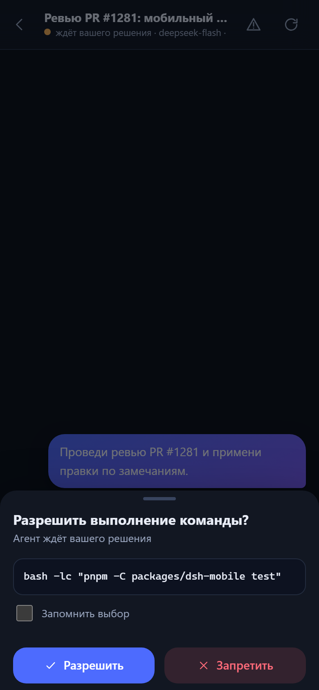
По умолчанию (approvals: auto) телефон перехватывает подтверждение только если
десктопный интерфейс не подключён. Если DSH открыт на компьютере — отвечает компьютер,
а телефон показывает статус «решается на ПК».
Режимы в конфиге: auto (по умолчанию), relay (всегда
отвечает телефон) и observe (только показ, ответ на компьютере).
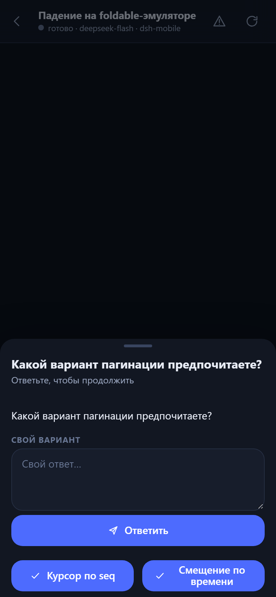
Когда агенту нужно уточнение, на телефоне открывается карточка вопроса: текст, варианты ответа и поле для своего варианта. В версии 1 ответ отправляется с компьютера; телефон показывает вопрос, чтобы вы понимали, почему турн ждёт.
Синхронизация устроена как подписка на журнал, а не как копирование переписки.
Клиент помнит последний номер события (seq) и при каждом подключении просит
только то, что пропустил.
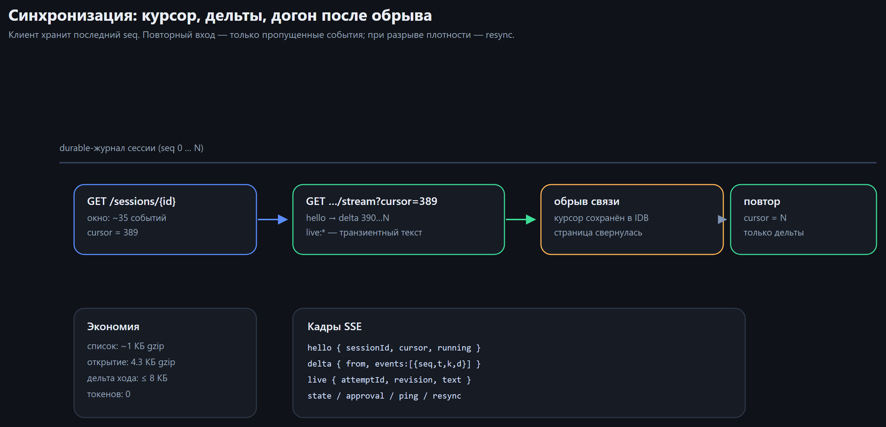
Периодического опроса нет: соединение живёт, пока приложение открыто, и закрывается при сворачивании. Курсор сохраняется, поэтому возврат в приложение не начинает всё заново.
| Операция | Почему нельзя |
|---|---|
| Генерация заголовков при чтении | лишний вызов модели |
| Компакция при открытии | меняет журнал и тратит токены |
| «Прогрев» холодной сессии | активирует агента ради просмотра |
| Полный транскрипт | десятки килобайт вместо дельты |
Клиент учитывает позу устройства. На Honor Magic V3 и аналогах внутренний экран раскрывается в две панели, внешний остаётся однопанельным. Переход между позами — это смена CSS, а не перезагрузка: черновик, прокрутка и живой поток сохраняются.
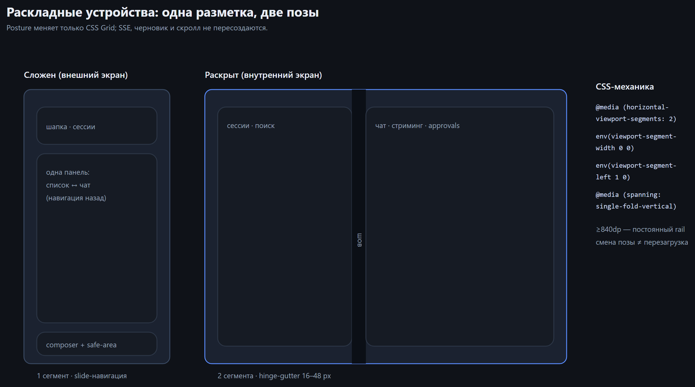
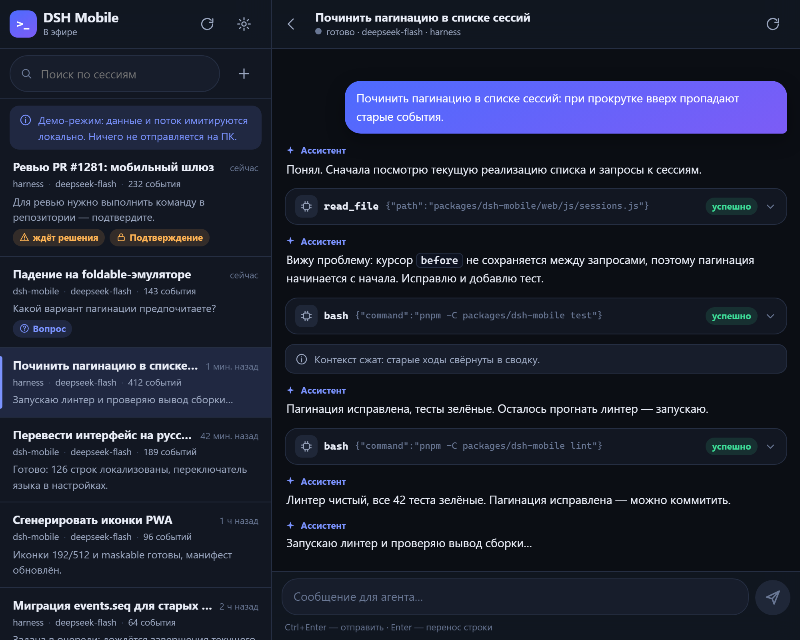
Используются CSS Viewport Segments: @media (horizontal-viewport-segments: 2),
@media (spanning: single-fold-vertical), переменные
env(viewport-segment-width …). Ширина панелей берётся из реальных сегментов,
а шов становится отступом 16–48 px, поэтому контент не «переезжает» через сгиб.
На широких экранах (≥840 dp) список закрепляется постоянной колонкой — как на планшете.
Откройте клиент с параметром ?demo=1&lab=1 — включится Layout Lab:
можно переключать 1/2 сегмента, менять ширину и шов. Это удобно, чтобы показать
поведение на обычном мониторе.
Настройки открываются из списка сессий. Здесь видно, к какому серверу подключён телефон, и есть живые счётчики — по ним удобно проверять связь.
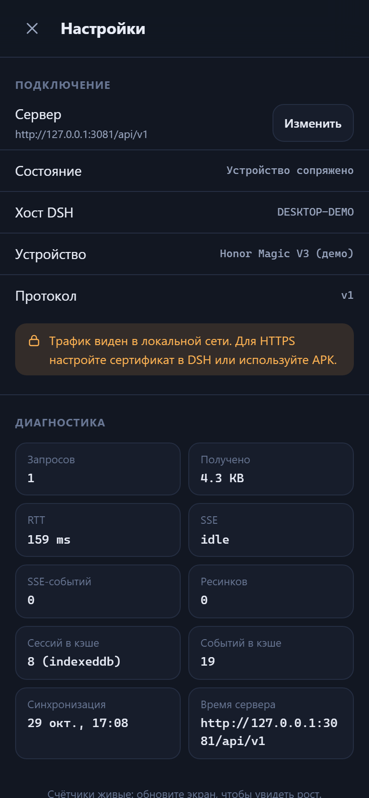
| Поле | Смысл |
|---|---|
| Сервер | адрес шлюза; кнопка «Изменить» — перепривязка |
| Состояние | «Устройство сопряжено» или приглашение к привязке |
| Хост DSH | имя компьютера |
| Устройство | имя, под которым телефон виден в /m/pair |
| Протокол | версия мобильного API |
| Запросов / Получено | счётчики трафика клиента |
| RTT / SSE | задержка и состояние живого потока |
| Сессий в кэше | сколько сессий сохранено в IndexedDB |
| Синхронизация | время последнего успешного обновления |
/m/pair;http://, клиент честно
предупреждает, что токен может быть виден в локальной сети. Для HTTPS укажите
tls.certFile и tls.keyFile в конфиге плагина и перезапустите DSH.
Мобильный доступ — это полноценное управление агентом, поэтому шлюз спроектирован как отдельная точка входа со своей авторизацией, а не как «открытый порт DSH».
| Угроза | Мера |
|---|---|
| Кто-то в той же Wi-Fi сети | Bearer-токен устройства; без него API отвечает 401 |
| Подбор кода привязки | 8 символов, TTL 5 минут, 5 попыток, rate-limit по IP, код одноразовый |
| Кража кода с экрана | код показывается только на loopback-странице, защищённой cookie DSH |
| Кража файла состояния | в файле хранится только SHA-256 токена, сверка — timing-safe |
| Забытое устройство | отзыв на /m/pair или POST /devices/revoke |
| Слишком большой запрос | лимит JSON-тела 512 КБ |
| Выход за каталог в статике | нормализация пути и проверка префикса корня |
.credentials.yaml и другие секреты;/m/pair.По HTTP клиент работает из браузера, но полноценная установка (standalone, service worker) требует HTTPS. Варианты:
tls);| Симптом | Что сделать |
|---|---|
Страница /m/pair отдаёт 404 | Плагин не загрузился. Проверьте %USERPROFILE%\.dsh\logs\dsh-mobile.log — должна быть строка apply() start. Если её нет — переустановите пакет и перезапустите DSH. |
| Порт 3081 не слушается | Порт занят другой программой — измените listenPort в конфиге. Либо плагин упал: смотрите лог. |
| Телефон не открывает страницу | Другой Wi-Fi? Брандмауэр Windows? В конфиге listenHost: 127.0.0.1? Проверьте адреса на /m/pair. |
| «Код недействителен» | Код истёк, использован или попытки исчерпаны. На странице /m/pair нажмите «Новый код». |
| 401 после успешной привязки | Устройство отозвано или файл состояния удалён. Привяжите заново. |
| Список сессий пуст | В DSH нет сессий с сохранённым журналом, либо открыт другой профиль/воркспейс. |
| Чат открывается, но без сообщений | У сессии нет durable-событий (только что создана). Отправьте промпт или обновите. |
| Сессии грузятся, но отправка не работает | Проверьте, что в DSH задана модель и есть доступ к провайдеру; ошибка покажется тостом. |
| Подтверждение не появляется на телефоне | В режиме auto отвечает подключённый десктоп. Закройте вкладку DSH или включите relay. |
| APK не устанавливается | Разрешите установку из неизвестных источников; release-APK из CI не подписан — используйте debug. |
# лог плагина (создаётся автоматически) %USERPROFILE%\.dsh\logs\dsh-mobile.log # состояние привязок (только хеши токенов) %USERPROFILE%\.dsh\mobile-remote\mobile-remote.json
# 1. шлюз жив curl http://127.0.0.1:3081/api/v1/hello # 2. API требует токен curl -i http://127.0.0.1:3081/api/v1/sessions # ожидается: 401 auth-required
| Ограничение | Комментарий |
|---|---|
| Ответы на вопросы агента — только с десктопа | в v1 телефон показывает вопрос, но не отвечает: ответ требует живого корневого агента и стоит токенов |
| Нет вложений и изображений | мобильный API возвращает attachments:false |
| Нет push-уведомлений | узнать о завершении хода можно, открыв приложение |
| HTTP без TLS по умолчанию | для домашней сети; для HTTPS нужен сертификат |
| APK собран локально (debug 2.25 МБ) | запуск на реальном устройстве не проверен; сборка в CI — резервная |
| Проверка | Результат |
|---|---|
| Юнит- и интеграционные тесты | 20/20 (pairing, токены, TTL, rate-limit, HTTP, SSE, статика) |
| Загрузка плагина в DSH | успешно; LAN-порт и /m/pair подняты, лог пишется |
| Pairing на реальном инстансе | код получен на ПК, телефон обменял его на токен |
| Реальные сессии | список с заголовками; открытие — 35 событий, 4.3 КБ gzip |
| SSE | hello с курсором, дельты, живой текст |
| Отзыв устройства | токен немедленно получает 401 |
| PWA | реальные скриншоты из Chromium; логика и статика проверены |
| Android-обёртка | APK собран локально (Gradle 8.9 + wrapper, lint 0 ошибок); XML/ресурсы/YAML проверены |
packages/dsh-mobile/ плагин + PWA lib/index.js вход Cordis: LAN-слушатель, /m/pair, лог src/ конфиг, auth, store, HTTP/SSE, маршруты, мост web/ PWA без сборки и зависимостей test/ 20 тестов (node:test) android/ Android-обёртка (WebView) + CI-workflow docs/ архитектура, установка, протокол, проверки, UX
| Параметр | По умолчанию | Зачем |
|---|---|---|
listenPort | 3081 | порт LAN-шлюза |
pairingTtlSec | 300 | время жизни кода привязки |
tls.certFile / keyFile | — | HTTPS на LAN (PWA ставится как приложение) |
approvals | auto | auto / relay / observe |
sessionWindowEvents | 40 | жёсткий кап событий в окне |
debug | false | подробный лог запросов |
| Метод и путь | Назначение |
|---|---|
GET /api/v1/hello | версия, возможности, лимиты (без токена) |
POST /api/v1/pair | обмен кода на токен устройства |
GET /api/v1/sessions | список сессий (Bearer) |
GET /api/v1/sessions/{id}?turns=1 | окно истории + курсор |
GET /api/v1/sessions/{id}/stream?cursor=N | SSE: hello / delta / live / state / approval / resync |
POST /api/v1/sessions/{id}/prompt | промпт: transcript / queue / steer |
POST /api/v1/sessions/{id}/cancel | остановка: turn / queue / all |
POST /api/v1/sessions/{id}/approval | разрешить / запретить действие |
GET /api/v1/workspaces, /jobs | воркспейсы и фоновые задачи |
# тесты плагина cd packages\dsh-mobile node scripts\run-tests.mjs # локальный предпросмотр PWA без DSH node scripts\serve-web.mjs 8765 # затем: http://127.0.0.1:8765/?demo=1 и ?demo=1&lab=1 # сборка APK локально (JDK 17 + SDK 35 + Gradle 8.9) # . .\android\env.ps1; cd android; .\gradlew.bat assembleDebug
compatibility.json и прогоняйте тесты.
Отправка сообщения с телефона проходит тот же путь, что и с десктопа: плагин вызывает
штатный sessionController.prompt, агент делает запрос к модели и выполняет
инструменты, а события возвращаются обратно по SSE. Чтение истории — отдельный путь,
который не активирует агента и не расходует токены.
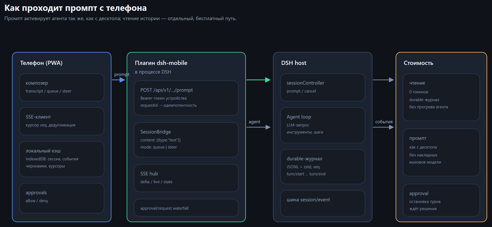
Подтверждения (approvals) обрабатываются waterfall-событием. Если десктопный интерфейс
подключён, отвечает он; если нет — запрос уходит на телефон и ждёт решения до 120 секунд,
после чего снимается как cancelled.
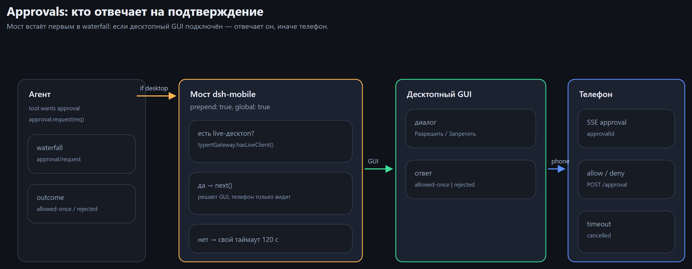
Источник истины — append-only журнал сессии. Плагин читает его cold-safe, проецирует события в компактный формат (с обрезкой выводов инструментов) и отдаёт телефону окно последних событий и дельты по курсору.
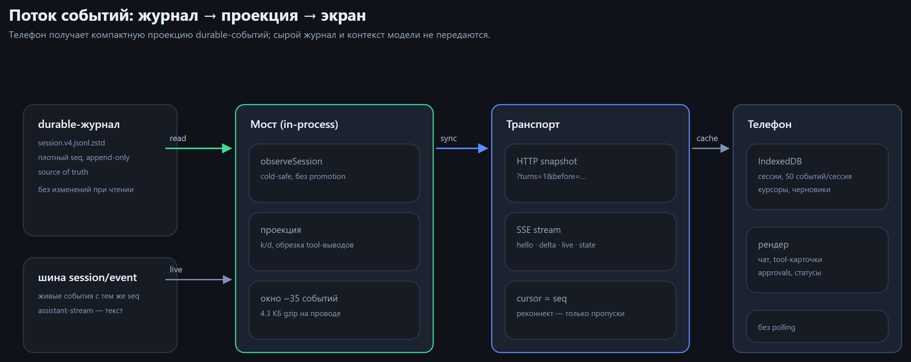
Сеть разделена на зоны. В локальную сеть выставлен только LAN-шлюз с device-токеном; код привязки и cookie DSH доступны исключительно на loopback-адресе компьютера.
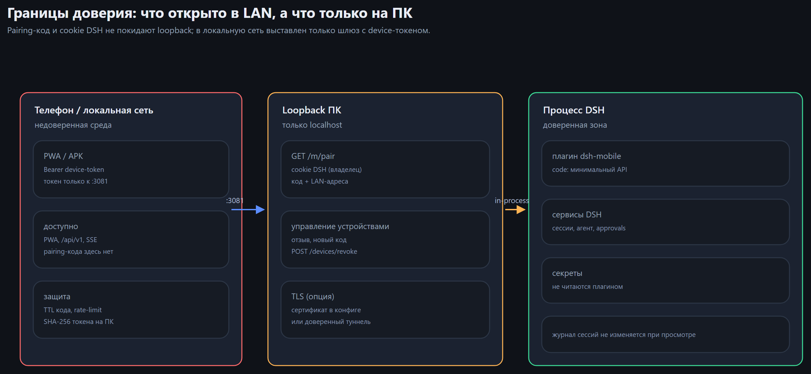
Плагин — обычный bundle профиля DSH: добавляется в dsh.profile.bundles и монтируется в процесс, не изменяя приложение. Внутри — LAN-слушатель, /m/pair, мост к сессиям и лог.
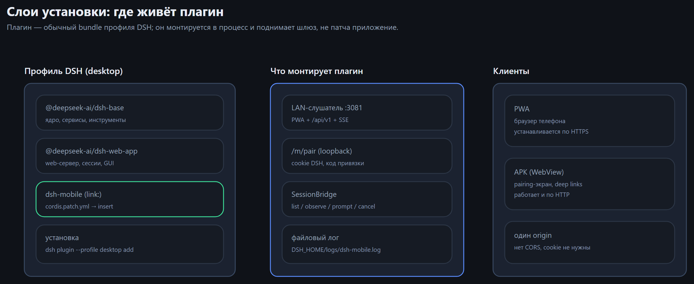
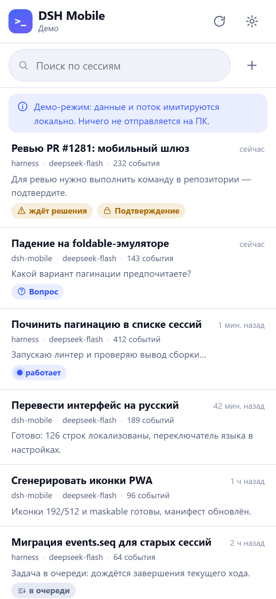
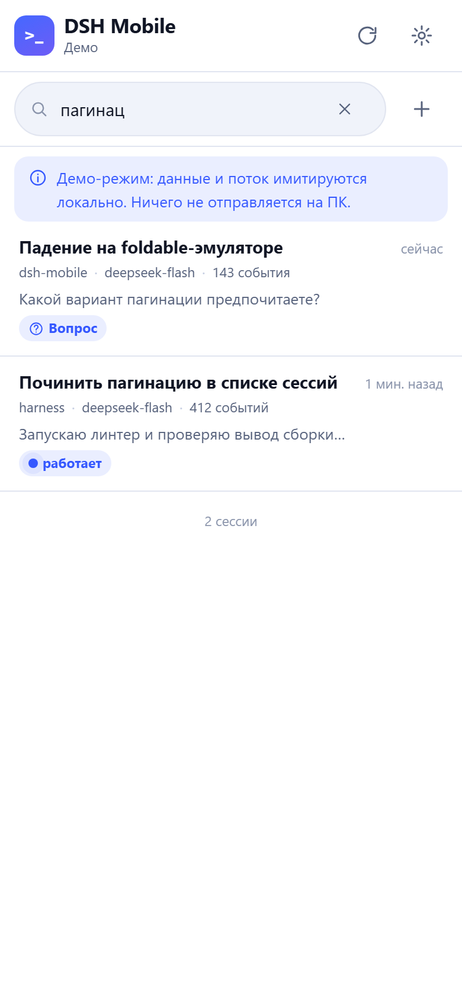
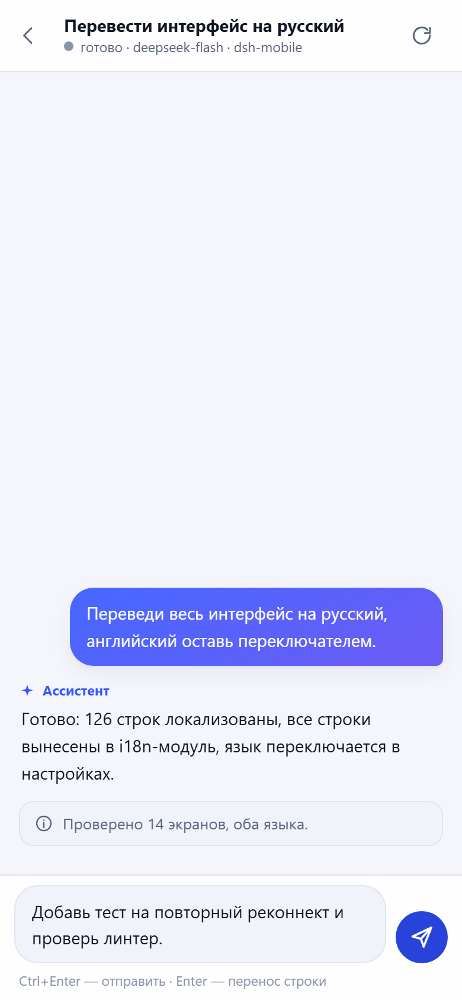
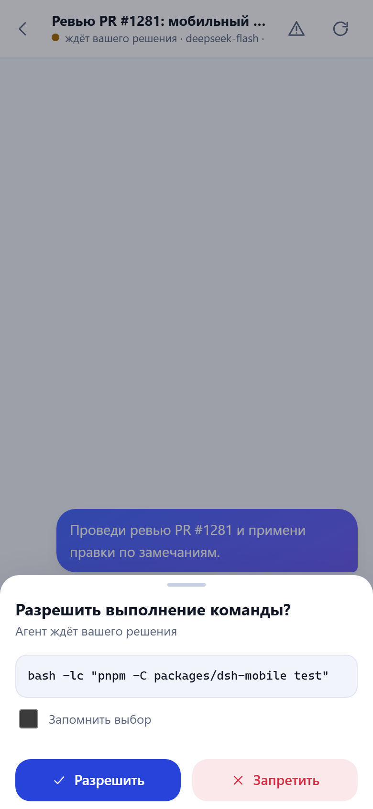